川崎市について知ろう！
そもそも川崎市ってどこ？
川崎市は、神奈川県に位置する市で県内で最も都内に近い。ある。人口は2020年時点で
1,540,000人。
福岡市に次いで全国6位。 ７つの区で形成されており、川崎の西側は
治安もよく自然も多い一方、東側は治安は悪く建物や工場が多い。しかし、その分店や
アクセスも良く人口は集中している。
近年、川崎市全体で土地開発が行われており、今後も人口が増えることは間違いないで
しょう。そして、土地の市場も上がってきているので、川崎市移住を考えている方は、
早めの行動をしてはかがでしようか。
区別紹介
川崎区
川崎大使
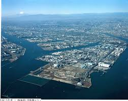川崎人口島
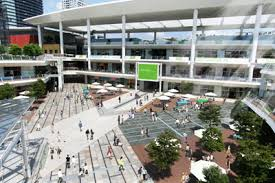ラゾーナ川崎
【概要】
まずは川崎区。川崎区は、市で一番東側に位置しており、埋め立て地や工場、人工島などが多い地域になってて、ほぼ平地になっている。ちなみに人口島の扇島は首都高湾岸線を通行する以外、立ち入りはできない。また、浮島にある浮島町にある川崎浮島ジャンクションはこの湾岸線と東京湾アクアラインの接続点となり、木更津にすぐ行ける。さらに東京国際空港（羽田空港）に川崎側で最も近い地点となっているため羽田空港の「神奈川口」構想が検討されている。
【隣接している自治体、行政区】
- 神奈川県川崎市幸区
- 神奈川県横浜市鶴見区
- 東京都大田区
- 千葉県木更津市
【名所・観光スポット・祭事】
【交通】
- 東海道線、上野東京ライン、京浜東北線
- 南武線
- 鶴見線
- 大師線等々
幸区
夢見ヶ崎動物公園
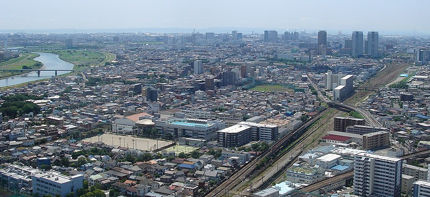幸区街並み
【概要】
幸区は、かつて梅の名所として知られ、明治天皇の御幸があり、これを記念して御幸村（みゆきむら）と名付けられたのが区名の由来となっている。川崎区の隣出多摩川の下流部域に位置しており、一番面積が小さい区だ。
【隣接している自治体、行政区】
- 神奈川県川崎市川崎区
- 神奈川県川崎市中原区
- 神奈川県横浜市鶴見区
- 神奈川県横浜市港北区
- 東京都大田区
【名所・観光スポット・祭事】
【交通】
- 横須賀線
- 南武線
- 武蔵野線
中原区
中原平和公園
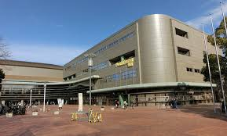等々力アリーナ
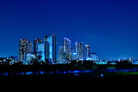高層ビル
【概要】
中原区は、川崎市のほぼ中心に位置する。区の北東は多摩川で東京都と境を接し、西南は矢上川が流れる。 全般として平坦な地形であるが、高津区や横浜市に隣接する井田地区などは丘陵地になっている。
また、東京都心部や横浜にアクセスしやすいこともあり、人口・世帯数は7区の中で最も多い。さらに、サッカーJリーグの川崎フロンターレの本拠地である等々力陸上競技場や川崎市市民ミュージアムなどのある等々力緑地が区内にある
【隣接している自治体・行政区】
- 神奈川県川崎市幸区
- 神奈川県川崎市高津区
- 神奈川県横浜市港北区
- 東京都大田区
- 東京都世田谷区
【名所・観光スポット・祭事】
【交通】
- 横須賀線、湘南新宿ライン
- 南武線
- 東急東横線
- 東急目黒線
- 武蔵野線
高津区
溝の口駅前
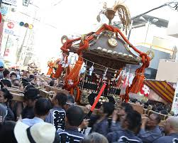高津区民祭
【概要】
高津区も中原区同様に川崎市のほぼ中心に位置するし、多摩川に沿った低地と、その南側および西側に広がる丘陵地帯（多摩丘陵東端部）で構成されている。夏は暑く、冬は寒い。ただし東京都心部ほどの都市気候にはなっていない。また、住宅地域が多いが、大規模工場が比較的多く、準工業地域もある。溝口周辺には大規模商業施設も立地する。ちなみに区役所はJR武蔵溝ノ口駅・東急溝の口駅至近、警察署は高津駅至近、郵便局は梶が谷駅至近と分散している。
【隣接している自治体・行政区】
- 神奈川県川崎市中原区
- 神奈川県川崎市宮前区
- 神奈川県川崎市多摩区
- 神奈川県横浜市港北区
- 神奈川県横浜市都筑区
- 東京都世田谷区
【名所・観光スポット・祭事】
【交通】
- 南武線
- 東急田園都市線
- 東急大井町線
- 武蔵野線
宮前区
東高根森林公園
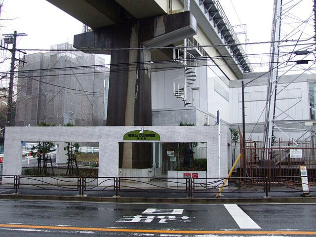電車とバスの博物館
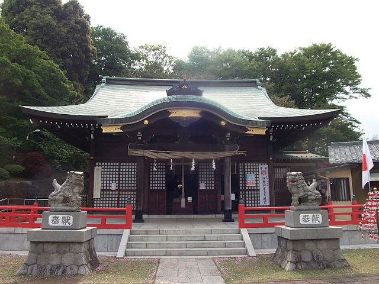白幡八幡大神
【概要】
宮前区は多摩丘陵上に位置し、区全域で起伏に富んだ地形を有する。そのため、平地はいくつかの川に沿った地域および台地上の狭い地域のみである。そのため、坂が非常に多い。
当区がまだ存在しなかったころ、東急田園都市線開通までは都心に近い立地を生かした農業を行うのどかな農村の体であったが、同線の開通・東名高速道路東名川崎インターチェンジの設置以降、急速に人口が増加し、都市化が進んだ。もっとも、住民の多くは東京都内へ通勤・通学を行っており、東京のベッドタウンとしての位置づけが大きい。20万人の人口を有しながら高校が1校しかないことがそれを物語っている。商業的にも高津区・青葉区・そして東京都内の比重が大きい。
【隣接している自治体・行政区】
- 神奈川県川崎市高津区
- 神奈川県川崎市多摩区
- 神奈川県川崎市麻生区
- 神奈川県横浜市青葉区
- 神奈川県横浜市都筑区
【名所・観光スポット・祭事】
【交通】
- 東急田園都市線
- 武蔵野線
多摩区
生田緑地バラ園
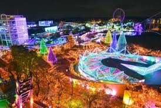よみうりランド
藤子・F・不二雄ミュージアム
【概要】
細長い川崎市の最北端に位置し、新宿、渋谷、岩本町(秋葉原)、大手町(丸の内）など都内との交通網が発達しているため、川崎中心部との商業的なつながりは薄いが、稲田堤、中野島、登戸（小田急線以西）といった区北西部は稲城市とのつながりがやや強い。南武線がその例である。北は多摩川を境に東京都と接する。南には多摩丘陵が広がり、生田緑地は市民の憩いの場となっている。多摩川梨で有名である。特に区北西部は稲城市とともに生産地の中心である。
【隣接している自治体・行政区】
- 神奈川県川崎市高津区
- 神奈川県川崎市宮前区
- 神奈川県川崎市麻生区
- 東京都世田谷区
- 東京都狛江市
- 東京都調布市
- 東京都稲城市
【名所・観光スポット・祭事】
【交通】
- 南武線
- 京王電鉄相模原線
- 小田急電鉄小田原線
麻生区
川崎アートセンター
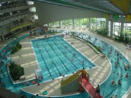ヨネッティー王禅寺
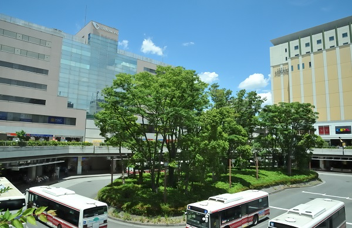新百合ヶ丘駅周辺
【概要】
川崎市の西北端に位置し、多摩丘陵の一部を占める。全体的に標高は高めであり、川崎市で最も標高が高い地点も麻生区内にある。区の中央から西に流れる麻生川沿いは標高が低くなっている。
小田急の新百合ヶ丘駅付近を川崎市の北部副都心と位置づけて、区役所、税務署などの公共施設、百貨店、映画館など様々な商業施設が充実する近代都市としての開発が行われた[1]。1998年（平成10年）度には建設省（現・国土交通省）の都市景観100選を受賞した。大きな街でありながら駅周辺では風俗営業を禁止しており、遊技場（パチンコ店）の一店だけに留まっている珍しい街である。
【隣接している自治体・行政区】
- 神奈川県川崎市多摩区
- 神奈川県川崎市宮前区
- 神奈川県横浜市青葉区
- 東京都稲城市
- 東京都多摩市
- 東京都町田市
【名所・観光スポット・祭事】
【交通】
- 京王電鉄相模原線
- 小田急電鉄小田原線
- 小田急電鉄多摩線